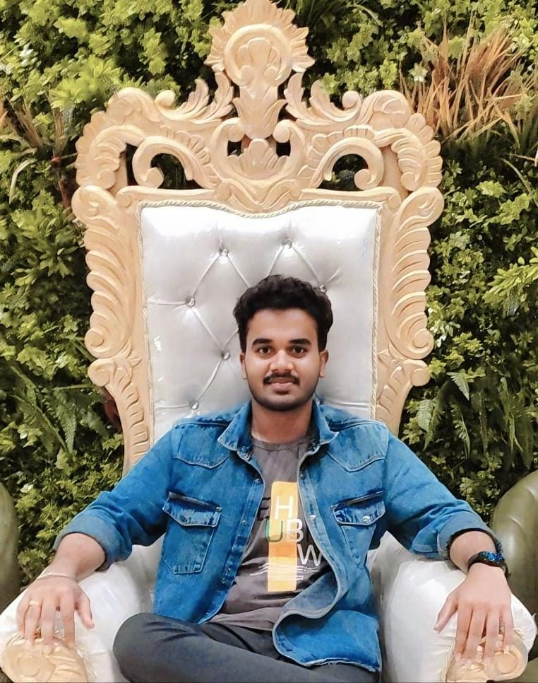

I'm Jeswanth
This is my official portfolio website which
shows all my skills and project details...

.png)

.png)

This is my official portfolio website which
shows all my skills and project details...
Hello! I'm Jeswanth, an aspiring web developer currently in my second year of B.Tech at SVCE. My journey into the world of technology began with a fascination for creating dynamic and interactive websites. Skilled in HTML, CSS, and Bootstrap, I am passionate about crafting visually appealing and user-friendly interfaces. I find particular joy in exploring the realm of CSS, especially when it comes to implementing animations and transitions. Although I'm still in the early stages of my journey, I have already begun building basic projects to apply and refine my skills. My ultimate goal is to become a proficient web developer capable of creating immersive online experiences. I believe that attention to detail and a creative approach to problem-solving are essential qualities in achieving this goal. In my spare time, I enjoy experimenting with new technologies, expanding my knowledge, and refining my craft. I'm excited to continue learning and growing as a developer, and I'm eager to contribute to the ever-evolving world of web development. While my portfolio is still taking shape, I've dedicated myself to honing my skills through hands-on projects and experimentation. Each project serves as a stepping stone, refining my craft and expanding my capabilities as a developer In addition to my technical skills, I bring a strong sense of creativity and attention to detail to every project I undertake. I believe that the fusion of artistry and technology is what sets exceptional web experiences apart from the rest. Thank you for taking the time to learn a bit about me. I look forward to sharing my journey and projects with you!


.svg)

Here are some of my projects that I've been involved in.
I proudly present my HTML and CSS to-do list project. This project showcases my skills in front-end web development by creating a user-friendly interface for task management. Using HTML, I structured the content, while CSS added style and visual appeal. The to-do list allows users to organize tasks efficiently, highlighting my ability to create practical web applications. This project is a testament to my proficiency as a front-end developer and a valuable addition to my portfolio..
I feature a COVID-19 website I created using HTML, CSS, and JavaScript. With HTML, I organized the content for clarity, while CSS added style and visual appeal. JavaScript made the site interactive and dynamic, enhancing the user experience. Through regular updates on cases, prevention measures, and vaccination progress, this website serves as a valuable resource for public health awareness. By developing this website, making it a significant asset in my portfolio.
I showcase my book store website crafted using HTML, CSS, and JavaScript. This project highlights my proficiency in web development and my dedication to creating user-friendly experiences. With HTML, I structured the content, ensuring easy navigation, while CSS added visual appeal. JavaScript brought the site to life. This website caters to book enthusiasts, showcasing my ability to merge creativity and technical skills effectively..
Feel free to reach out to me for any questions, comments, or feedback.


Get in touch with me